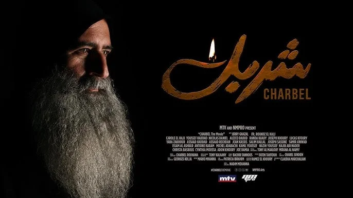

"Charbel The Movie" (Mar Charbel)

Producer Nadim Mehanna (NMPRO Arts) announced the film on MTV Lebanon's talk show Sar El Wa2et on December 21, 2025, unveiling a trailer and a national fundraising campaign that raised more than $1.3 million to support an international release. Four actors portray Charbel across his life, with Jerry Ghazal as the younger Charbel and the story's central figure. The film is listed with Lebanese cinemas for 2026. This is a new production, distinct from the 2009 film "Charbel" by Nabil Lebbos.
Announcement coverage (Blog Baladi, December 21, 2025)
Background, cast, and both films: the Saint Charbel Movie page.